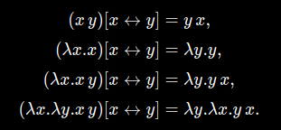
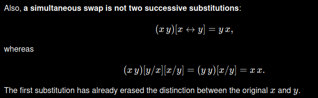
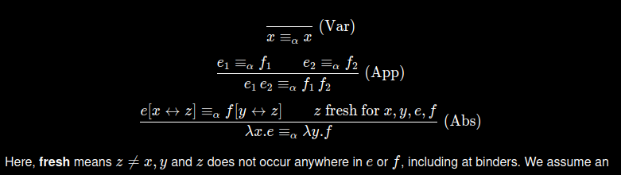

CSE 590 · Fall 2026 · Discussion 1
Build alpha-equivalence from syntax, names, free variables, and simultaneous swapping.
Names are strings, and finite collections of names are represented by lists. The apparent “sets” are therefore lists: union is concatenation and duplicates are intentionally retained.
Given \(f:X\to\mathcal P(Y)\), form \(R_f=\{(x,y)\mid y\in f(x)\}\). Given \(R\subseteq X\times Y\), form \(f_R(x)=\{y\mid(x,y)\in R\}\). The review task is to check that the two constructions undo each other.
The original section deliberately does not solve the capture-avoiding-substitution exercise. Its goal here is narrower: recognize that the side conditions prevent a formerly free variable from becoming bound.
The syntax tree has exactly three cases. Every function we define next follows those same three cases.
Vars records every name that appears, including binders and repeated occurrences. FV filters out every occurrence of the bound name. This matches the Agda definitions exactly rather than silently replacing their lists by mathematical sets.
A swap \(e[x\leftrightarrow y]\) exchanges the two names everywhere, including binders. It is one structural operation, not two substitutions performed in sequence.
Name-level transposition swaps two names. Its structural lifting swaps variables and binders throughout a term.


Variables are alpha-equivalent to themselves, and applications are alpha-equivalent componentwise. For abstractions, compare both bodies after moving their binders to the same genuinely fresh name.
“Fresh” means \(z\ne x,y\) and \(z\) occurs nowhere in either body, including at binders.

\(\lambda x.x\equiv_\alpha\lambda y.y\). Choose fresh \(z\). Both swapped bodies are \(z\), so the abstraction rule reduces the goal to \(z\equiv_\alpha z\).
\(\lambda x.x\not\equiv_\alpha\lambda y.x\). The left occurrence of \(x\) is bound while the right occurrence is free. The contradiction proof formalizes this mismatch.
These definitions and their proofs can be encoded in proof assistants such as Agda. The PL-adjacent news item linked that week was OpenAI's Navier–Stokes formalization in Lean.